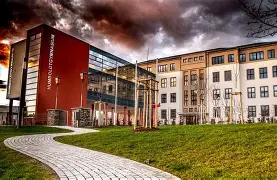

Das Wilhelm-von-Humboldt-Gymnasium in Nordhausen ist eine traditionsreiche Schule mit moderner Ausbildung. Seit über 500 Jahren prägt unsere Schule die Bildungslandschaft in Nordhausen und bereitet junge Menschen auf eine erfolgreiche Zukunft vor.

Unsere Schule verbindet Tradition mit Zukunft – wir freuen uns auf dich!